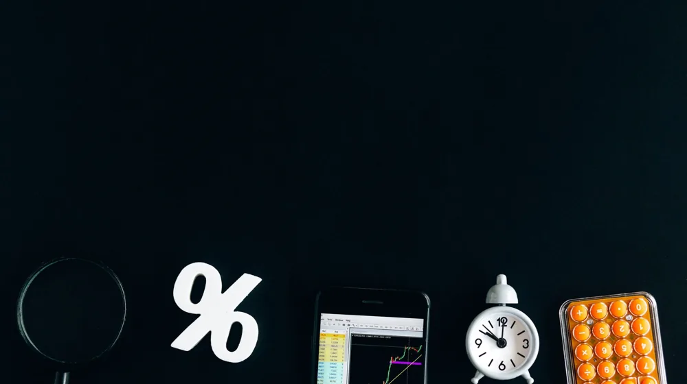

금리 인상기 대출 갈아타기, 놓치면 손해 보는 5가지 핵심 체크리스트
사진: Nataliya Vaitkevich / Pexels (무료 이미지, 출처 표기)
금리 인상기, 대출 갈아타기 정말 이득일까? (갈아타기 전 고려사항)

치솟는 금리에 매달 나가는 대출 이자가 부담스러우신가요? 많은 분들이 금리 인상기에 대출 갈아타기를 고민하지만, 과연 나에게 이득이 될지 확신하기 어렵습니다. 대출 갈아타기는 단순히 더 낮은 금리를 찾는 것을 넘어, 복잡한 부대비용과 심사 과정을 동반합니다. 하지만 제대로만 활용하면 금융 부담을 크게 줄일 수 있는 기회가 될 수 있습니다.
특히 2026년 8월 기준, 시장 금리가 불확실성을 보이는 만큼, 현재 대출 조건을 면밀히 분석하고 새로운 대출 상품을 신중하게 비교하는 것이 중요합니다. 단순히 낮은 금리만 보고 성급하게 결정하기보다는, 총 이자액과 모든 부대비용을 고려한 종합적인 판단이 필요합니다.
대출 갈아타기 핵심 체크리스트 5가지
대출 갈아타기를 결정하기 전 반드시 확인해야 할 필수 요소를 정리했습니다. 이 체크리스트를 통해 나에게 유리한 선택을 할 수 있는지 판단해 보세요.
- 중도상환수수료 확인: 기존 대출을 만기 전에 상환할 때 발생하는 수수료입니다. 보통 남은 대출 기간과 원금에 따라 달라지며, 0.5%~1.5% 수준입니다. 갈아타기로 얻는 이자 절감액이 이 수수료보다 크지 않다면 오히려 손해를 볼 수 있습니다.
- 새로운 대출의 금리 및 유형: 갈아탈 대출의 금리가 정말 낮은지, 그리고 변동금리인지 고정금리인지 확인해야 합니다. 금리가 계속 오를 것으로 예상된다면 고정금리가 유리할 수 있고, 하락할 가능성이 있다면 변동금리도 고려할 수 있습니다.
- 부대비용 (인지세, 근저당권 설정비 등): 새로운 대출을 받을 때 발생하는 인지세, 근저당권 설정 및 해지 비용, 보증료 등 각종 부대비용을 확인해야 합니다. 이 비용들이 예상보다 클 수 있으므로 반드시 미리 계산에 포함해야 합니다.
- 대출 기간 및 상환 방식: 새로운 대출의 상환 기간이 기존보다 길어지면 월 상환액은 줄어들지만 총 이자액은 늘어날 수 있습니다. 원리금 균등분할, 원금 균등분할 등 상환 방식이 나의 현금 흐름에 맞는지도 확인해야 합니다.
- 신용점수 변동 가능성: 대출 신청 시 신용조회가 반복되면 일시적으로 신용점수가 하락할 수 있습니다. 또한, 여러 금융기관에 동시 다발적으로 대출을 문의하는 것은 신용점수에 부정적인 영향을 줄 수 있으니 신중해야 합니다.
나에게 맞는 대출 상품, 어떻게 찾을까?
수많은 금융기관의 대출 상품 중에서 나에게 가장 유리한 조건을 찾는 것은 쉽지 않습니다. 다음 방법들을 활용하여 효율적으로 대출 상품을 비교해 보세요.
- 금융결제원 대환대출 인프라 활용: 금융결제원이 운영하는 대환대출 인프라(온라인 원스톱 대환대출 서비스)를 이용하면 여러 금융기관의 주택담보대출 및 전세대출 상품을 한눈에 비교하고 신청까지 할 수 있습니다. 2026년 8월 현재, 신용대출 외에 담보대출까지 서비스 범위를 확대하고 있어 편리합니다.
- 시중은행 및 핀테크 대출 비교 플랫폼: 주요 시중은행 앱이나 토스, 카카오페이 등 핀테크 대출 비교 플랫폼을 통해 다양한 금융사의 신용대출 상품을 비교하고 금리 및 한도를 확인할 수 있습니다. 간편하게 여러 상품을 탐색할 수 있다는 장점이 있습니다.
- 전문가 상담: 복잡한 조건이나 담보대출의 경우, 은행의 대출 상담사나 금융 전문가와 직접 상담하여 개인의 상황에 맞는 맞춤형 조언을 구하는 것도 좋은 방법입니다.
대출 갈아타기, 놓치면 안 될 주의사항
대출 갈아타기는 분명 이득이 될 수 있지만, 몇 가지 주의사항을 간과하면 오히려 손해를 보거나 예상치 못한 어려움에 직면할 수 있습니다.
- 대출 한도 및 조건 변화: 새로운 대출 심사 과정에서 소득, 신용점수, 담보 가치 등 다양한 요인으로 인해 기존 대출 한도보다 적은 금액이 나오거나, 대출이 거절될 수도 있습니다. 이 경우 계획에 차질이 생길 수 있으므로 미리 대비해야 합니다.
- 금리 변동 리스크: 변동금리 상품으로 갈아탈 경우, 시장 금리가 다시 인상되면 오히려 이전보다 높은 이자를 부담하게 될 위험이 있습니다. 미래 금리 추이를 예측하고 본인의 리스크 감내 수준을 고려하여 신중하게 선택해야 합니다.
- 서류 준비 및 심사 기간: 대출 갈아타기 시 필요한 서류가 많고 심사 기간이 길어질 수 있습니다. 소득 증빙 서류, 재직 증명서, 등기부등본 등 필요한 서류를 미리 준비하고, 충분한 시간을 두고 진행하는 것이 좋습니다. 금융기관마다 요구하는 서류가 다를 수 있으니 정확한 정보는 해당 기관에 문의하세요.
대출 갈아타기 절차, 한눈에 보기
대출 갈아타기는 다음 5단계로 진행됩니다. 각 단계별로 필요한 사항을 미리 준비하여 원활하게 진행하세요.
대출 갈아타기는 신중한 접근이 필요한 재테크 전략입니다. 이 글에서 제시된 체크리스트와 주의사항을 바탕으로 본인의 상황에 맞는 최적의 결정을 내리시길 바랍니다. 정확한 사항은 해당 금융기관의 공식 홈페이지나 직접 상담을 통해 다시 한번 확인하시길 권장합니다.
🔗 이 글도 함께 보면 좋아요: 암보험, 놓치면 후회할 5가지 핵심! 가입 전 반드시 확인하세요
관련 추천 상품
대출 금리 비교, 대환 대출 상품 관련 인기 상품 보러가기
이 포스팅은 쿠팡 파트너스 활동의 일환으로, 이에 따른 일정액의 수수료를 제공받습니다.